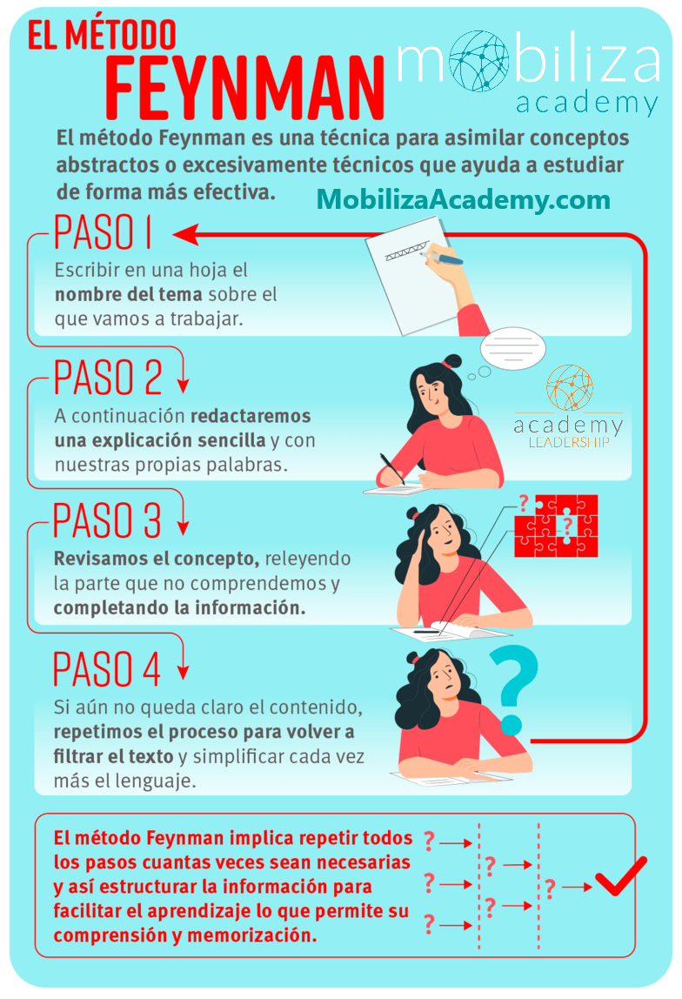

¿En qué consiste?
El Método Feynman es una técnica de estudio que consiste en explicar
un concepto con palabras simples, como si se lo estuvieras enseñando
a otra persona. Fue ideado por Richard Feynman, un reconocido físico
que defendía que la verdadera comprensión se refleja en la capacidad
de explicar.
¿Cómo aplicarlo?
- Selecciona el tema que deseas estudiar.
-
Escríbelo en una hoja e intenta explicarlo con tus propias
palabras como si se lo enseñaras a un niño.
-
Identifica vacíos en tu explicación y vuelve a estudiar esas
partes.
-
Reescribe y simplifica hasta que tu explicación sea clara, lógica
y sencilla.
✔️ Ventajas:
- Refuerza el aprendizaje activo.
- Ayuda a detectar lagunas de conocimiento.
- Mejora la comprensión profunda de los temas.
❌ Desventajas:
- Puede llevar más tiempo que otras técnicas.
-
No siempre se adapta a temas extremadamente técnicos o abstractos.
¿En qué carreras se recomienda?
Es ideal para carreras como:
- Física
- Matemáticas
- Ingeniería
- Educación
- Medicina
- Ciencias Sociales

Ejemplo de cómo aplicar el Método Feynman